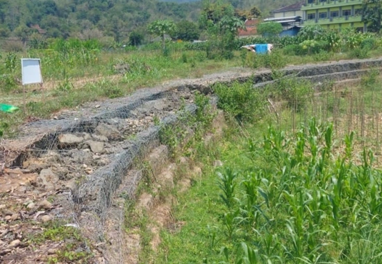
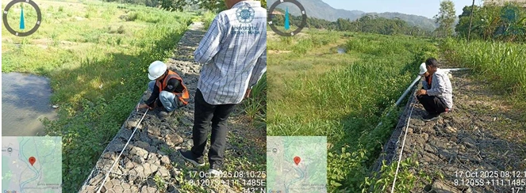
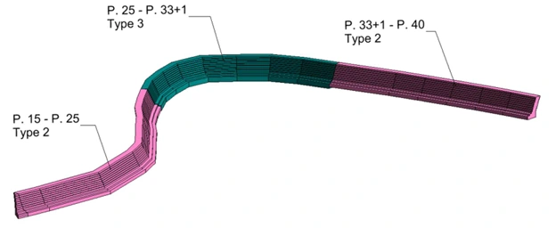

BIM · Quantity Survey · Oct – Nov 2025
Gabion Survey —
Asem Gandok Grindulu River, Pacitan
Field survey and BIM modeling for a gabion flood management structure along the Grindulu River in Pacitan, East Java, carried out for SNVT Bengawan Solo Water Source Network.

Overview
This project involved conducting a field survey and producing BIM-based quantity documentation for gabion retaining and flood protection works along the Asem Gandok reach of the Grindulu River in Pacitan, East Java. The works are part of a broader flood mitigation program managed by SNVT Bengawan Solo.
Gabion structures are wire mesh baskets filled with rock, used extensively in river engineering for erosion control and bank stabilization.
Scope of Work
- Set up field survey equipment and assisted with on-site dimensional measurement of gabion works
- Measured gabion material quantities and work volumes from survey data
- Built a 3D Revit model of the gabion structures with parametric quantity takeoff
- Calculated gabion work costs based on measured quantities and unit rates
- Prepared quantity and cost summary report for client submission
Key Deliverables
- Field measurement data and survey notes
- 3D BIM model of gabion structures (Revit)
- Quantity takeoff report with material and cost breakdown
- Gabion work cost calculation summary
Documentation

Gabion Bank Protection

Field Survey

3D Revit Model